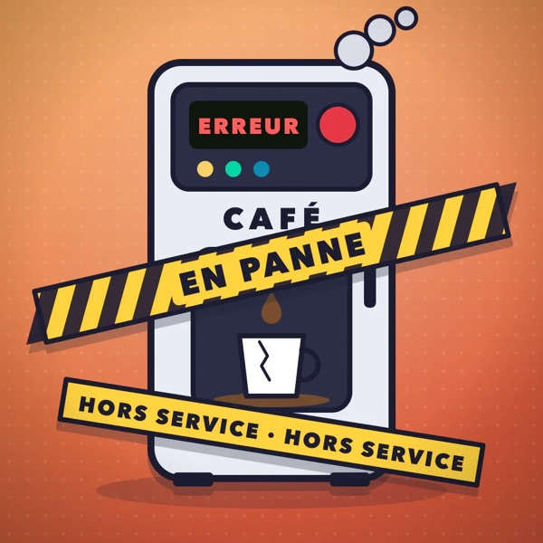
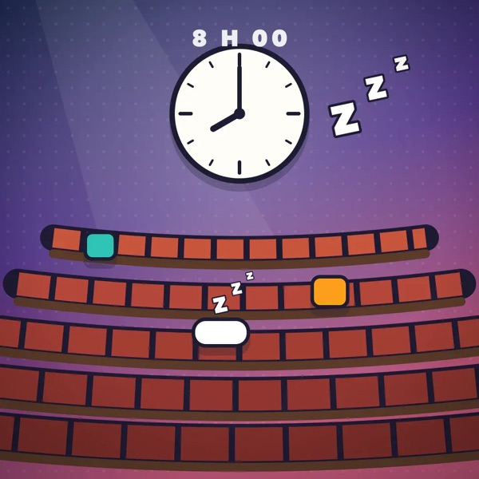
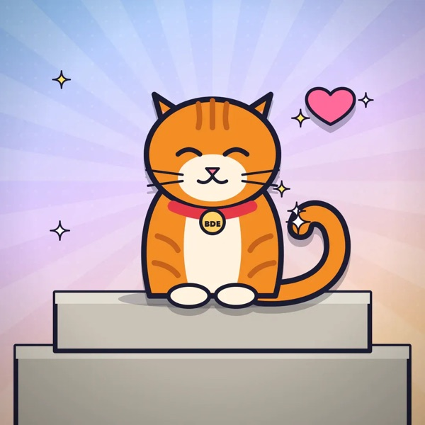

P—02 · Case study
WikiStudent
A collectible card game for college campuses: the student union opens a space for its school, students turn campus photos and memes into cards, open booster packs and fill their binder.
Visit the site (French) ↗Campus memes, as trading cards.
Every school has its running jokes: the broken coffee machine, the 8 a.m. lecture, the cat that hangs around campus. WikiStudent turns them into a collectible card game unique to each school. Students submit cards, the student union moderates them, and everyone opens booster packs to complete their collection.
The business model is deliberately simple: the student union pays once (€20 for one class year, €30 for up to five) and its students play for free.



Cards from the demo school, generated illustrations.
A spec, then agents.
I started by writing a complete product spec: pricing, roles, draw rules, the coin economy, moderation, image rights, legal pages and the design system. It was written so a coding agent could build the app in one pass.
Development then ran on Claude Code with several sub-agents in parallel, each on its own branch (game, student-union dashboard, payments, native app, legal pages), then merged. My job: break the work down, scope each agent, review, test and make the calls. Every decision is recorded in a decision log.
- Project rules written for the agents: no game logic on the client, no
any, every feature shipped with its tests. - One commit per logical step, so everything can be reviewed and rolled back.
From school sign-up to first booster.
- The student union creates the school. It pays through Stripe (or joins the invite-only beta) and gets an invite code per class year.
- Students join. Invite code plus a confirmed email; they can belong to several schools and switch between them.
- They submit cards. Photos are cropped and compressed in the browser, with mandatory consent on upload.
- The student union moderates. It approves, picks a rarity, and the card enters the draw pool.
- Everyone opens boosters. Boosters recharge over time; duplicates are discarded for coins, which buy bonus boosters or trade on the marketplace.
The rules live in the database.
The key decision: no game, coin or role logic on the client. Everything goes through SQL functions in Postgres, called over RPC. A player who edits the page’s JavaScript can’t mint coins or rig a draw.
Mobile-first web, PWA, Capacitor shell
Draws, coins, roles, moderation
Row-level and per-image access policies
Around it: Supabase Auth, Stripe for school payments, RevenueCat for in-app purchases, and Vercel cron jobs for nightly tasks.
Where rigor mattered.
| Topic | Approach |
|---|---|
| Opening a booster | A single transaction with the player’s row locked: draw a rarity from normalized weights, then a uniformly random card within it. “Unique” cards leave the pool as soon as someone finds them. |
| Displayed odds | Odds per rarity are shown before every opening or purchase, computed from the same data as the SQL draw. A test keeps the two in sync. |
| Dynamic rarity | Popularity score = likes × 3 + number of owners. Every night, cards are re-ranked by score and redistributed across rarities; every change is logged. |
| Coin economy | Every movement writes a ledger row and updates the balance in the same transaction. |
| Image rights | An “I’m in this photo” button on every card pulls it from the draw pool and blurs it immediately, pending the student union’s decision. Cards are also hidden automatically after several reports. |
Honest odds.
From lib/odds.ts: only rarities that still have at least one drawable card count, exactly like the open_booster SQL function.
export function boosterOdds(rarities: OddsRarity[], cards: OddsCard[]): Odds[] { // A unique rarity that has already been found is no longer drawable const drawable = rarities.filter( (r) => cards.some((c) => c.rarity_id === r.id && (!r.is_unique || !c.found_by)) && (r.weight ?? 0) > 0, ) const total = drawable.reduce((s, r) => s + Number(r.weight ?? 0), 0) return drawable.map((r) => ({ label: r.label, color: r.color, pct: total ? (Number(r.weight) / total) * 100 : 0, })) }
Break it before selling it.
Before opening to student unions, I had the entire codebase audited by trying to cheat. Every exploit found was first reproduced on a local database (minting coins, a booster refunded twice, a school activated by a stranger), then fixed in a migration and covered by a SQL test.
- One test fires 20 simultaneous booster openings to prove no coin or card is ever counted twice.
- Hidden or rejected images become unreadable to regular members, and their links expire.
- Migrations are idempotent and checked in production with a read-only script.
What shipped.
The first schools.
The app is in invite-only beta. Go-to-market runs through student unions: a ready-to-explore demo school, short-form videos and direct outreach. The first five schools get it free at launch.
What I learned.
- With AI agents, the work that matters becomes the spec, the breakdown and the review.
- Put the rules in the database, not the client, as soon as money or cheating is involved.
- Think legal from v1: image rights, GDPR, displayed odds, legal pages.